Un pequeño jardín bajo el cielo real
Vive con un perrito o un gatito pixelado en tu iPhone.

Una mascota, gratis para siemprePase Pikomofu: pago único · Sin anuncios
Lo que pasa en el jardín
Comida, Agua, Limpiar, Ducha. Cuidar a tu mascota es fácil, y nunca se irá. Si alguna vez has vivido con un perro o un gato, reconocerás los muchos gestitos que se esconden aquí.
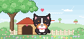
Apoya un dedo: tum, tum
Deja el dedo encima y aparece un corazoncito latiendo sobre su cabeza. En perros y gatos late a distinto ritmo.
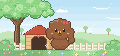
Una mariposa en la nariz
Se queda bizca mirando la mariposa que se posó en su nariz. Y luego… ¡achís!
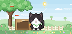
Al gorrión, ek-ek-ek
Cuando un gorrión se posa en la valla, el gato hace ese “ek-ek-ek…”.
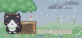
Si llueve, bajo el árbol
El clima del jardín es el clima real. Cuando llueve, se refugia bajo el árbol.
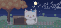
La misma luna de esta noche
De noche sale una luna con la misma forma que la luna real de ese día.
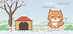
Días de nieve, pura alegría
Cuando nieva, los perros corretean y los gatos se hacen bolita.
De vez en cuando, también esto
Aunque la abras todos los días, hay momentos que rara vez verás.
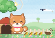
Pasa una familia de patos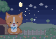
Noche de estrellas fugaces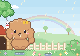
Arcoíris tras lluvia con sol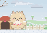
Primera nieve en la nariz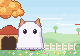
Fantasma en Halloween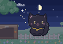
Carreras nocturnas del gato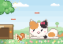
Al acecho de una ardilla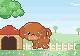
Vueltas tras su cola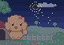
Fuegos artificiales lejanos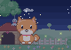
Noche de luciérnagas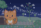
La Vía Láctea en Tanabata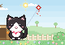
Una cometa en Año Nuevo- Y mucho más
- La melodía de las 5 de la tarde
- La primera estrella
- Eclipse de luna
- Eclipse de sol
- Venus, el lucero de la tarde
- Dangos para ver la luna llena
- Gorro de Papá Noel en Navidad
- Muñeco de nieve
- Carámbanos
- Mañanas de escarcha
- Espejismo de calor
- Campanilla de viento
- Muñeco teru teru bozu
- Libélulas rojas
- Telaraña tras la lluvia
- Una hoja de arce en la cabeza
- Pelaje de invierno
- Sacudida en plena muda
- Nube con forma de hueso
- Estelas de avión
- Grandes nubes de verano
- Cielo aborregado
¿Con quién vas a vivir?
12 razas de perro, 8 de gato y perros mestizos. Elige el pelaje y, si es mestizo, también la forma de las orejas y la cola.
Sobre el precio
Una mascota, gratis para siempre
Todo lo que pasa en el jardín se puede ver gratis. Y sin anuncios.
- Cuidar, acariciar y tocar
- Cielo y clima reales, y el paso de las estaciones
- Elegir raza, pelaje o mestizo
- Postales para enseñar a un amigo
Pase Pikomofu
Lo compras una vez y es tuyo para siempre.
- Juntos también en el Apple Watch
- Widgets en la pantalla de inicio y bloqueada
- Hasta 5 mascotas juntas
- Tu familia también, con En familia
Los nuevos amigos y la ropita que vengan también llegarán gratis con las actualizaciones. Sin crear cuenta y sin recopilar datos.
¡Vamos al jardín!
Una mascota, gratis para siemprePase Pikomofu: pago único · Sin anuncios
| Compatibilidad | iPhone y iPad (iOS 17 o posterior) / Apple Watch con el Pase (watchOS 10 o posterior) |
|---|
| Precio | Gratis (compra opcional y única dentro de la app: Pase Pikomofu) |
|---|
| Idiomas | 12 idiomas, entre ellos español, japonés, inglés y coreano |
|---|
| Anuncios y datos | Sin anuncios, sin cuenta, sin recopilar datos |
|---|